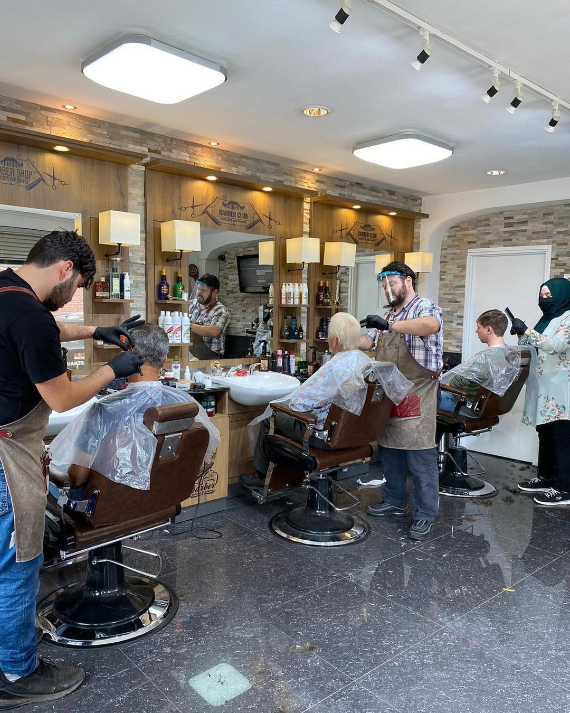
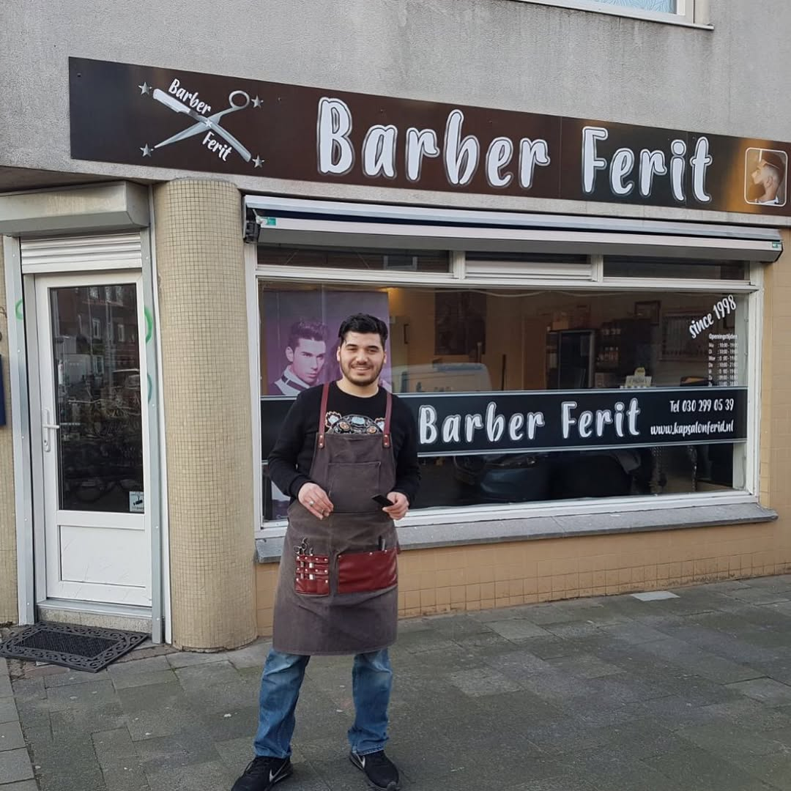
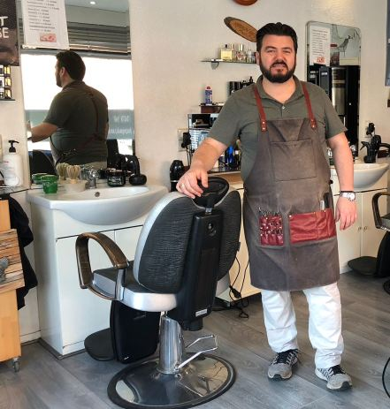
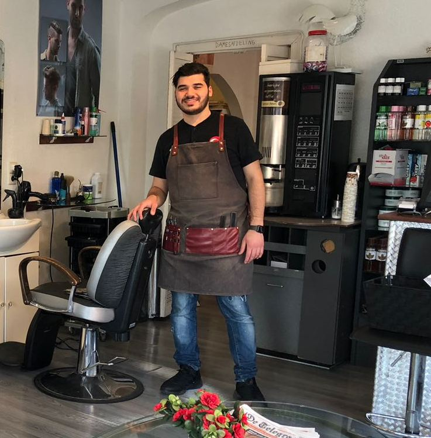

Al meer dan 25 jaar hét adres in Lombok voor knippen en baardscheren. Familiebedrijf, eerlijke prijzen, en een heerlijke bak koffie terwijl je wacht.
Opgericht in 1998 als herenkapsalon aan de JP Coenstraat, sinds 2005 op de Laan van Nieuw Guinea. Ons team? Vader en zoon — creativiteit, klantvriendelijkheid en kwaliteit zit bij ons in de familie.
Wij nemen de tijd voor je. Kom gezellig langs, drink een heerlijke bak koffie en stap de deur uit zoals jij het wilt.

1998Meer dan 25 jaar ervaring in knippen en baardscheren — doorgegeven van generatie op generatie.


🎁 Spaarkaart: bij een volle kaart 50% korting op alle knipbehandelingen óf een gratis product.
Vader en zoon nemen de tijd voor je. Ervaar het vakmanschap in een ontspannen sfeer.